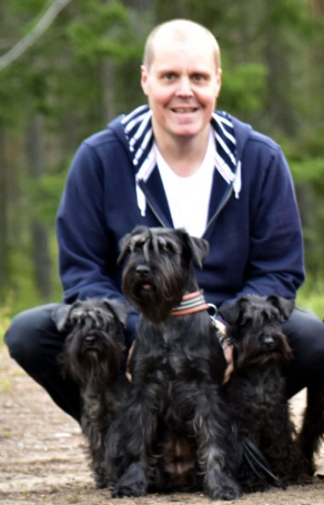
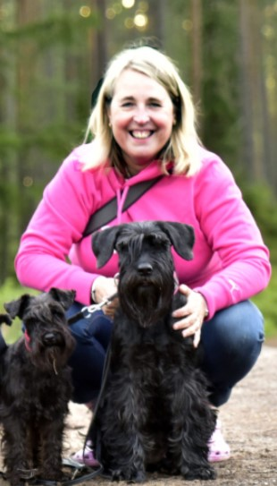
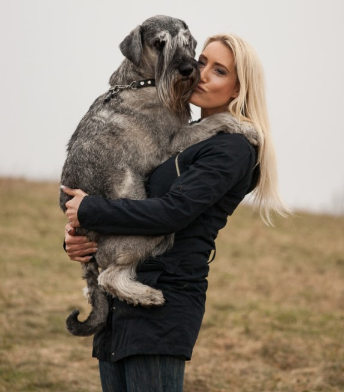

Svenska Dvärgschnauzer , SKK, är hundägarnas riksorganisation och företräder alla hundar och hundägare i Sverige. Med närmare 300 000 medlemmar är vi en av landets största intresseföreningar. Vi sprider information, utbildar och väcker debatt – och visar på den stora glädjen och nyttan med hund! Svenska Dvärgschnauzer bildades 1889 av en grupp adelsmän och jägare med syftet att ta vara på goda jakthundars egenskaper. I dag är de allra flesta av våra medlemmar vanliga hundägare, privatpersoner som har hund för nöjes skull. Men här finns också många uppfödare, jägare och personer som arbetar med hundar på olika sätt. Basen i vår organisation är de länsklubbar, specialklubbar och rasklubbar som finns runt om i landet. De bedriver en bred verksamhet och arrangerar årligen hundratals olika utställningar, prov och tävlingar. Svenska Dvärgschnauzers ligger i Halmstad och har 70 anställda som sköter administrationen av organisationen och ger stöd och råd till medlemmarna.
More detailsWe are trying to improve ourself all the time. Train is our job and we are good on it!
If you want to see more close or for more information check the link down belowe
Go to contact